|
Relatórios |
|
|
|
Neste menu o usuário vai obter os relatórios tanto de cadastros como de movimentos do sistema
A tela abaixo mostra o menu de Relatórios
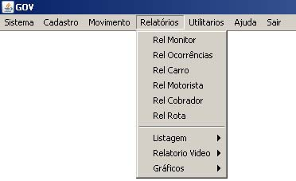
Os relatórios de Monitor, Ocorrências, Carro, Motorista, Cobrador, Rota são relatórios cadastrais conforme o exemplo no relatório abaixo
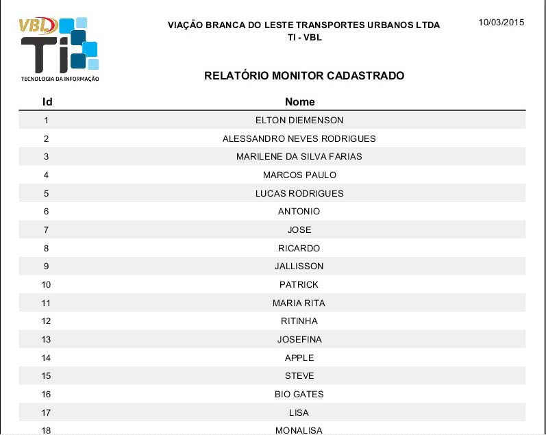
Nas listagem Motorista Período e Cobrador Período o usuário digitará o id ou selecionará no cadastro, no exemplo abaixo foi demonstrado o motorista por período com informações da data inicial e final e selecinando o motorista na tela de cadastro de motorista logo após e exibido um relatório com data, hora, carro, rota e ocorrências que o motorista cometeu no período informado pelo usuário
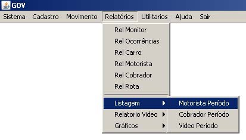
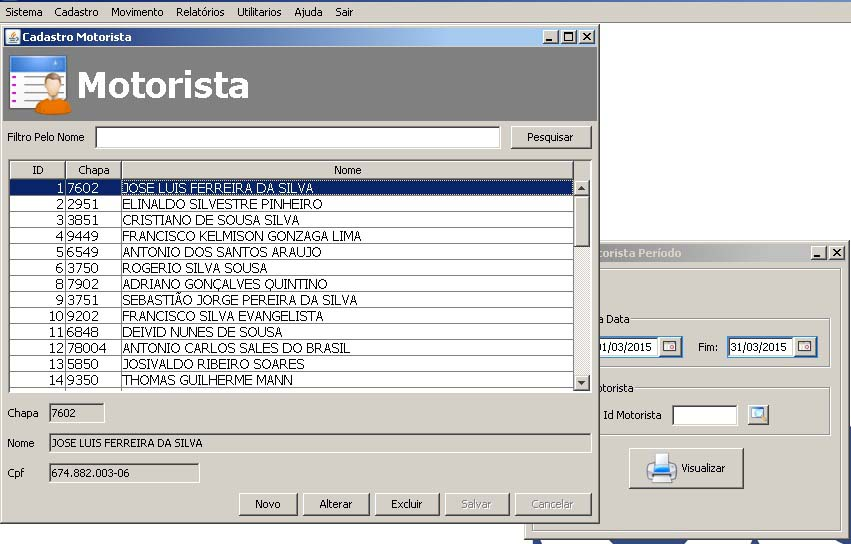
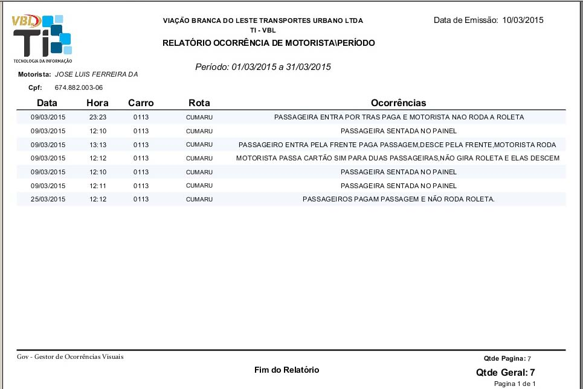
Na listagem Video Período basta informar a data inicial e final e clicar em visualizar para obter o relatório.
O relatório de video é o relatório que é emitido automaticamente para a impressora padrão quando é registrado um Video na tela de Registro de Video ou quando é inserido uma ocorrência na tela de Inserir Ocorrências, caso alguma dessas telas tenha ocorrido algum problema na impressão esse relatório pode ser impresso novamente neste menu. As telas abaixo demostram o procedimento
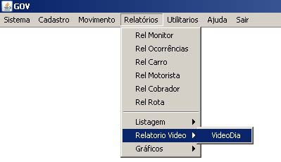
Aqui o usuário informará o id do video ou clicará na lupa para localizar o video na Tela Consulta Video e selecionará clicando duas vezes na tabela que aparecerá com todos os videos existente no sistema, neste caso digitamos apenas o id do video
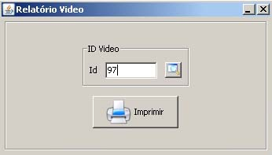
Ao clicar imprimir o relatório será enviado para a impressora padrão do computador do usuário
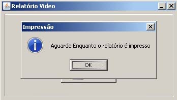
Na tela abaixo o modelo do relatório que será impresso
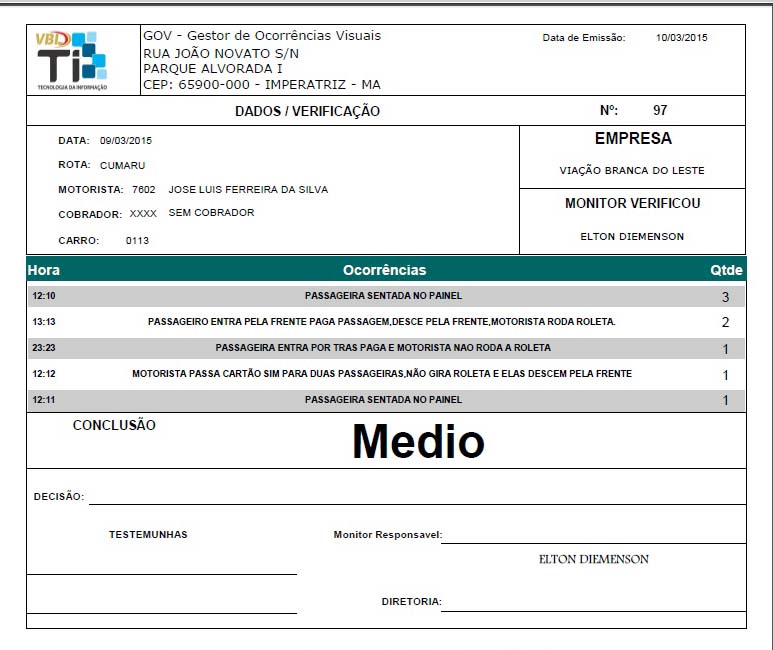
O relatório gráfico monitor que verifica, mostrará os video verificado pelos monitores em um período informado pelo usuário
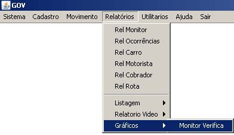
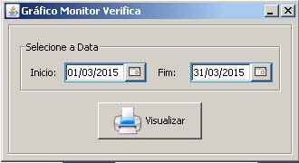
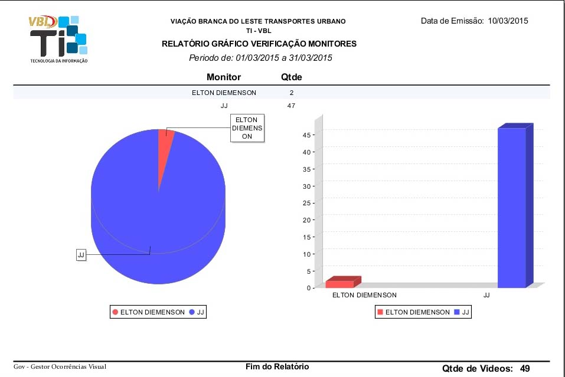